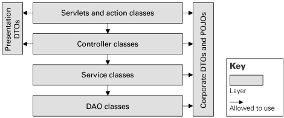

In the beginning developers created the big ball of mud. It was without form and void, and darkness was over the face of the developers1. The big ball of mud is an architectural style identified by it’s lack of architectural style [1]. In a big ball of mud architecture, all components of the system are allowed to communicate directly with each other. If the GUI code wants data from the database, it will write an SQL query and send it to directly to the database. Likewise, if the code which primarily talks to the database decides the GUI needs to be updated in a particular way, it will do so.
The ball of mud style is a challenging system to work under. Modifications can come from any direction at any time. Akin to a program which primarily uses global variables, it is hard, if not impossible, to understand everything that is happening or could happen.
Aside
Code examples in these notes are works of fiction. Any resemblance to a working code is pure coincidence. Having said that, python-esque syntax is often used for its brevity. We expect that you can take away the important points from the code examples without getting distracted by the details.
1import gui 2import database 4button = gui.make_button("Click me to add to counter") 5button.onclick(e => 6 database.query("INSERT INTO clicks (time) VALUES {{e.time}}")) 7
And architects said, “let there be structure”, and developers saw that structure was good. And architects called the structure modularity2.
The monolithic software architecture is a single deployable application. There is a single code-base for the application and all developers work within that code-base. An example monolith application would be one of the games developed by DECO28003 students at UQ4. (e.g. Retroactive5). A monolith should follow design conventions and be well structured and modular (i.e. it is not a big ball of mud).
Most developers are introduced to the monolith implicitly when they learn to program. They are told to write a program, and it is a single executable application. This approach is fine, even preferred, for small projects. It often becomes a problem for large, complex software systems.
The advantages of a monolith are that it is easy to develop, deploy and test. A single code-base means that all developers know where to find all the source code for the project. They can use any IDE for development and simple development tools can work with the code-base. There is no extra overhead that developers need to learn to work on the system.
Being a single executable component, deployment is as simple as copying the executable on to a computer or server.
System and integration testing tends to be easier with a monolith, as end-to-end tests are executing on a single application. This often leads to easier debugging once errors are found in the software. All dependencies and logic are within the application.
There are also fewer issues to do with logging, exception handling, monitoring, and, to some extent, scalability if it is running on a server.
The drawbacks of a monolith are complexity, coupling and scalability. Being a single application, as it gets larger and more complex, there is more to understand. It becomes harder to know how to change existing functionality or add new functionality without creating unexpected side effects. A catch phrase in software design and architecture is to build complex systems, but not complicated systems. Monoliths can easily become complicated as they grow to deliver complex behaviour.
Related to complexity is coupling, with all behaviour implemented in one system there tends to be greater dependency between different parts of the system. The more dependencies that exist, the more difficult it is to understand any one part of the system. This means it is more difficult to make changes to the system or to identify the cause of defects in the system.
A monolith running on a server can be scaled by running it on multiple servers. Because it is a monolith, without dependencies on other systems, it is easy to scale and replicate the system. The drawback is that you have to replicate the entire system on another server. You cannot scale components of the system independently of each other. If the persistence logic is creating a bottleneck, you have to copy the entire application on to another server to scale the application. You cannot user servers that are optimised to perform specialised tasks.
Persistent state is a particular challenge when scaling a monolith. If the system is replicated on multiple servers, the system has to be designed so that changes to the persistent data on one server does not invalidate behaviour executing on another server.
And architects said, “let there be an API between the components, and let it separate component from component6”.
The first architectural style we will investigate is a layered architecture. Layered architecture (also called multi-tier or tiered architecture) partitions software into specialised clusters of components (i.e. layers) and restricts how components in one layer can communicate with components in another layer. A layered architecture creates superficial boundaries between the layers. Often component boundaries are not enforced by the implementation technology but by architectural policy.
The creation of these boundaries provides the beginnings of some control over what your software is allowed to do. Communication between the component boundaries is done via well-specified contracts. The use of contracts results in each layer knowing precisely how it can be interacted with. Furthermore, when a layer needs to be replaced or rewritten, it can be safely substituted with another layer fulfilling the contract.
The traditional components of a layered architecture are seen in Figure 2. This style of layered architecture is the four-tier architecture. Here, our system is composed of a presentation layer, business layer, persistence layer, and database layer.
The presentation layer takes data and formats it in a way that is sensible for humans. For command line applications, the presentation layer would accept user input and print formatted messages for the user. For traditional GUI applications, the presentation layer would use a GUI library to communicate with the user.
The business layer is the logic central to the application. The interface to the business layer is events or queries triggered by the presentation layer. It is the responsibility of the business layer to determine the data updates or queries required to fulfil the event or query.
The persistence layer is essentially a wrapper over the database, allowing more abstract data updates or queries to be made by the business layer. One advantage of the persistence layer is it enables the database to be swapped out easily.
Finally, the database layer is normally a commercial database application like MySQL, Postgres, etc. which is populated with data specific to the software. Figure 3 is an over-engineered example of a layered architecture.
1 import gui 2 import business 4 button = gui . make_button ( " Click me to add to counter " ) 5 button . onclick ( business . click ) 6
1 import db 3 class ClickCounter : 4 clicks = 0 6 def constructor () : 7 clicks = db . query ( " SELECT COUNT (*) FROM clicks " ) 9 def get_click () : 10 return clicks 12 def add ( amount ) : 13 db . query ( " INSERT INTO clicks ( time ) VALUES {{ time . now }} " ) 15 click_counts = ClickCounter () 16
One of the key benefits afforded by a well designed layered architecture is each layer should be interchangeable. An example is an application which starts as a command line application, but can later be adapted to a GUI application by just replacing the presentation layer.
While the layered architecture is popular with software deployed on one machine (a non-distributed system), layered architectures are also often deployed to separate machines.
Each layer can be deployed as separate binaries on separate machines. A simple, common variant of distributed deployment is separating the database layer, as shown in figure 4. Since databases have well defined contracts and are language independent, the database layer is a natural first choice for physical separation.
In a well designed system, any layer of the system could be physically separated with minimal difficulty. The presentation layer is another common target, as shown in figure 5. Physically separating the presentation layer gives users the ability to only install the presentation layer and allow communication to other software components to occur via network communication.
This deployment form is very typical of web applications. The presentation layer is deployed as a HTML/JavaScript application which makes network requests to the remote business layer. The business layer then validates requests and makes any appropriate data updates.
Some database driven appliation generators will embedded the application logic in the database code so that all logic runs on the database server. The presentation layer is then separated from the application logic, as shown in figure 6.
An uncommon deployment variation (figure 7) separates the presentation and business layers from the persistence and database layers. An updated version of our running example is given in figure 8, the presentation layer remains the same but the communication between the business and persistence layers is now via REST.7
1 import http 3 def click () : 4 http . post ( 5 address = " 192.168.0.40 " , 6 endpoint = " / click / add " , 7 payload =1 8 ) 9
1 import db 2 import http 4 class ClickCounter : 5 ... # as above 7 click_counts = ClickCounter () 9 http . on ( 10 method = " post " , 11 endpoint = " / click / add " , 12 action =( payload => click_counts . add ( payload ) ) 13 ) 14
Separating software into layers is intended to increase the modularity and isolation of the components within each layer. Isolation is provided by defining a public interface through which all communication with the layer is to be performed.
Layers should not depend on implementation details of another layer. Layers should only
communicate through well defined interfaces (
Layering should be enforced. One layer should not “reach across” another layer to access behaviour implemented in some other layer. For example, in our standard form of the layered architecture, if the presentation layer uses a component from the presistence layer, it defeats the intent of having a business layer in the architecture.
A consequence of this is chains of message passing. An extreme example would be if the presentation layer needed to display some information from the database, the presentation layer would send a message to the business layer to get the object to be displayed. The business layer would send a message to the persistence layer to retrieve the object. The persistence layer would then send a message to the database layer to load the object.
Typically, there would not be a need to send messages from the highest to lowest layer. If the business layer knew it had an up-to-date copy of the object, it would return it to the presentation layer without messaging the persistence layer. If the persistence layer had already retrieved the object from the database, it would return it to the business layer without messaging the database layer.
Components can communicate across layers only through directly neighbouring layers.
Layers should be hierarchical. Higher layers depend on services provided by lower layers but not vice versa. This dependency is only through a public interface, so that components in the lower layer may be replaced by another component implementing the same interface. Components in a lower layer should not use components from a higher layer, even if the layers are neighbours.
Higher-level layers depend on lower layers, but lower-level layers do not depend on higher layers.
Downward dependency does not mean that data is not passed to higher layers. It does not even mean that control cannot flow from a lower level to a higher level. The restriction is on dependencies or usage, not on data or control flow. A lower layer should not use components from a higher layer, even through the higher layer’s interface. Breaking this increases the overall coupling of the system and means it is no longer possible to replace a lower layer with another layer.
Lower layers need a mechanism to be able to notify a higher layer that something has happened, of which
the higher layer needs to be aware. A common example of this is the presentation layer wants to
be notified if data that it is displaying has been updated in a lower layer. The observer design
pattern8
is a common solution to this notification issue. The component responsible for displaying the data in the
presentation layer implements the
The same issue occurs with error handling and asynchronous messaging. If a component in a higher layer sends a message, through an interface, to a component in a lower layer, the component in the lower layer needs a mechanism to report errors. A simple boolean or error code return may work in some situations, but often that is not appropriate. If the message is meant to return a value, in most languages it cannot also return an error result. There may also be different types of errors that need to be communicated to the higher layer. (e.g. The call from the higher layer broke the contract specified in the interface. Or, the lower layer is encountering a transient fault and the higher layer should try again later.) Exception handling works, if all layers are within one executable environment, but a key purpose of a layered architecture is to allow separation of the layers, so throwing an exception is not appropriate.
Callbacks9 are used to deal with this issue for both error handling and asynchronous messaging. A component from a higher layer in the architecture passes a function as a parameter when it sends a message to a component in a lower layer. This function is called by the component in the lower layer of the architecture to report an error or to indicate that an asynchronous call has completed.
Lower layers communicate with higher layers using general interfaces, callbacks and/or events. Dependencies are minimised by not relying on specific details published in a higher layer’s interface.
The subject and observer interfaces are examples of supporting logical infrastructure. Logging framworks
are another example of supporting infrastructure. Commonly, all layers will need to use the logging framework.
These are typically defined in separate “layers” that can be used by any of the other layers. These are
sometimes called
A sidecar layer contains interfaces that support complex communication between layers (e.g. design patterns like the observer pattern) or external services (e.g. a logging framework).
A purist design approach says that a sidecar layer may only contain interfaces. In some environments, an architecture may decide that multiple sidecars are beneficial, and may even use these for reusable components from broader organisational systems or for objects that hold data passed to higher layers. Figure 10 is an example of using sidecars for both of these purposes in a J2EE10 application.

In the example shown in figure 10, the servlets and action classes layer is equivalent to the presentation layer. The controller and service classes layers are a further partitioning of the business layer. The DAO (Data Access Objects) classes layer is equivalent to the persistence layer. The database layer is not shown in this example, which is common practice to hide it in diagrams focussing on the system’s architecture.
The Presentation DTOs (Data Transfer Objects) sidecar contains simple JavaBeans11 that contain data that is to be displayed. This approach takes advantage of J2EE’s mechanism that automatically populates and updates data in the presentation layer.
The Corporate DTOs and POJOs (Plain Old Java Objects) sidecar contains classes implemented by corporate-wide systems, and which are shared between systems. These provide common data and behaviour that spans multiple layers in many systems.
Some textbooks discuss the concept of closed and open layers. This is a way to describe how communication
flows between layers. Layers are categorised as either
An architecture where all layers are closed provides maximum isolation. A change to the communication contracts of any layer will require changes to at most one other layer.
Some architects will advocate that there are some situations where an
The layer isolation principle means that the implementation of a layer can be changed without affecting any other layer, as long as the interface does not change.
The layer isolation principle also means that a developer only needs to understand the public interface to use a layer, and not its implementation details.
The neighbour communication and downward dependency principles mean that if a layer changes its public interface, at most one other layer needs to change.
The upward notification and sidecar spanning principles mean that complex systems, with sophisticated flows of control and data, can be implemented while maintaining the other layered architecture design principles.
Lower layers in the architecture can be designed to deliver common services that may be reused across multiple applications. (e.g. The persistence layer can be designed to allow general purpose access to the database layer, allowing any type of database to be substituted into the system.)
Layers may be deployed on different computing infrastructure. This enables the hardware to be optimised for the types of services provided by just one layer. It also enables scaling and replication by allowing layers to be duplicated across multiple servers.
Poorly designed layers will encourage developers to break the layered architecture design principles in order to get the system to work. This can lead to a system that in detail more closely resembles a big ball of mud, than a layered design.
Layering often introduces performance penalties. Requiring a chain of message passing to obtain a service from a lower layer in the architecture adds to the cost of delivering the behaviour.
[1] B. Foote and J. Yoder, “Big ball of mud,”
[2] D. Garlan, F. Bachmann, J. Ivers, J. Stafford, L. Bass, P. Clements, and P. Merson,
[3] L. Bass, P. Clements, and R. Kazman,
1
2
3
5
6
8
9
10